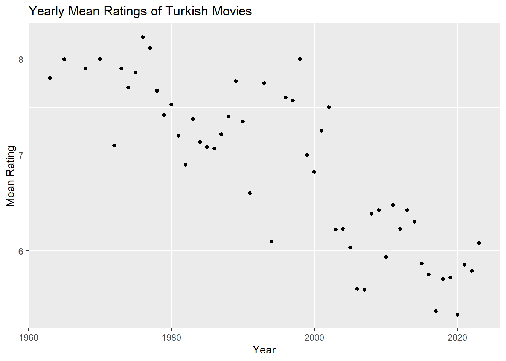
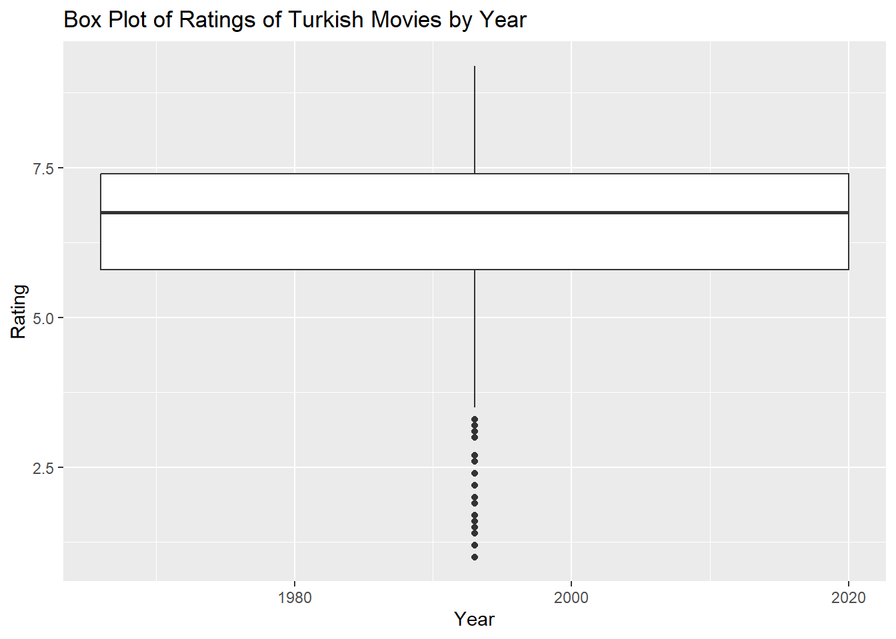

library(tidyverse)
library(rvest)
library(stringr)
# Define the URL
url_2010_2023 <- "https://m.imdb.com/search/title/?title_type=feature&release_date=2010-01-01,2023-12-31&num_votes=2500,&country_of_origin=TR&count=250"
url_before_2009 <- "https://m.imdb.com/search/title/?title_type=feature&release_date=,2009-12-31&num_votes=2500,&country_of_origin=TR&count=250"
all_urls <- c(url_2010_2023, url_before_2009)
movie_data <- data.frame()
for (url in all_urls) {
data_html <- read_html(url)
title_names <- data_html |> html_nodes('.ipc-title__text')
title_names <- html_text(title_names)
title_names <- tail(head(title_names,-1),-1)
title_names <- str_split(title_names, " ", n=2)
title_names <- unlist(lapply(title_names, function(x) {x[2]}))
year_values <- data_html |> html_nodes('.dli-title-metadata-item:nth-child(1)')
year_values <- html_text(year_values)
year_values <- str_remove_all(year_values, "[()]")
year_values <- as.numeric(year_values)
duration_values <- data_html |> html_nodes('.dli-title-metadata-item:nth-child(2)')
duration_values <- html_text(duration_values)
duration_values <- 60*as.numeric(substr(duration_values,1,1))+ifelse(nchar(duration_values)>2,as.integer(substring(duration_values,nchar(duration_values)-2,nchar(duration_values)-1)),0)
rating_values <- data_html %>% html_nodes('.ratingGroup--imdb-rating') %>% html_text() %>%
str_match("\\b([0-9]+\\.[0-9]+)") %>% as.numeric() # I write str_match("\\b([0-9]+\\.[0-9]+)") line of code with the help of AI
vote_values <- data_html |> html_nodes(".kRnqtn")
vote_values <- html_text(vote_values)
vote_values <- str_remove_all(vote_values, "[a-zA-Z,]")
vote_values <- as.numeric(vote_values)
temp_data <- data.frame(Title = title_names,
Year = year_values,
Duration = duration_values,
Rating = rating_values,
Votes = vote_values)
temp_data <- unique(temp_data)
movie_data <- rbind(movie_data, temp_data)
}
# a)
# It ranks the movies from the highest rated movie to the lowest rated movie and shows the 5 highest rated movies.
movie_data %>% arrange(desc(Rating)) %>% head(5) Title Year Duration Rating Votes
1 Hababam Sinifi 1975 87 9.2 42513
2 CM101MMXI Fundamentals 2013 139 9.1 46996
3 Tosun Pasa 1976 90 8.9 24329
4 Hababam Sinifi Sinifta Kaldi 1975 95 8.9 24370
5 Süt Kardesler 1976 80 8.8 20888# It sorts the movie from the highest rated movie to the lowest rated movie and shows the 5 lowest rated movies.
movie_data %>% arrange(desc(Rating)) %>% tail(5) Title Year Duration Rating Votes
466 Cumali Ceber 2 2018 100 1.2 10229
467 Müjde 2022 288 1.2 9920
468 15/07 Safak Vakti 2021 95 1.2 20608
469 Cumali Ceber: Allah Seni Alsin 2017 100 1.0 39267
470 Reis 2017 108 1.0 73973# In my opinion, the highest-rated movies include dramatic and emotional movies, while the lowest-rated movies include comedies movies. This shows that Turkish audiences value dramatic films more than comedy films. Additionally, Recep İvedik (2008), the first movie of the Recep İvedik series, has a much higher score with 4.8 points. This suggests that the quality of sequels has decreased or that audiences have become bored with such films.
#b)
# My favorite movies are Kuru Otlar Üstüne and Kelebekler.
movie_data %>% filter(Title == "Kuru Otlar Üstüne") Title Year Duration Rating Votes
1 Kuru Otlar Üstüne 2023 197 8.1 5081movie_data %>% filter(Title == "Kelebekler") Title Year Duration Rating Votes
1 Kelebekler 2018 117 7.3 15778#c
# Calculate the yearly mean ratings and counts
yearly_stats <- movie_data %>%
group_by(Year) %>%
summarise(mean_rating = mean(Rating), count = n())
# Plot the yearly mean ratings
ggplot(yearly_stats, aes(x = Year, y = mean_rating)) +
geom_point() +
labs(title = "Yearly Mean Ratings of Turkish Movies",
x = "Year",
y = "Mean Rating")
# Plot the yearly counts
ggplot(yearly_stats, aes(x = Year, y = count)) +
geom_point() +
labs(title = "Yearly Counts of Turkish Movies",
x = "Year",
y = "Count")
# It can be seen how the average scores and number of films of Turkish films change over the years. Some observations are as follows: -The average scores of Turkish films decreased after 2010 and reached the lowest level in 2023. -The number of Turkish films started to increase after 2010 and reached the highest level in 2023-There seems to be a negative relationship between the average scores of Turkish films and their numbers. That is, as the number of movies increases, the average score decreases.
# Plot the box plot of ratings by year
ggplot(movie_data, aes(x = Year, y = Rating)) +
geom_boxplot() +
labs(title = "Box Plot of Ratings of Turkish Movies by Year",
x = "Year",
y = "Rating")
#It can be seen how the scores of Turkish films change over the years, in which years they received higher or lower scores, and in which years there is more or less variation. Some observations are as follows: -The median of the scores of Turkish films decreased after 2010 and reached the lowest level in 2023. -The quarters of the scores of Turkish films narrowed after 2010 and reached the narrowest level in 2023. This shows that the scores of the films are more homogeneous. -The outliers in the scores of Turkish films decreased after 2010 and decreased to almost none in 2023. This indicates that the scores for the films are more normally distributed.
#d)
cor(movie_data$Votes, movie_data$Rating) [1] 0.1307806# Returns the correlation coefficient between the number of votes and the score. Since it is a value close to 0, we can say that there is no relationship, that is, there is no connection between the number of votes and the score. Since the value is close to zero, we can say that there is a weak positive relationship between the number of votes and the score. So, we can say that as the number of votes increases, the score also increases slightly. However, this relationship is not very strong.
#e
cor(movie_data$Duration, movie_data$Rating) [1] -0.03192943#Since the value is close to zero, we can say that there is a weak positive relationship between the number of votes and the score. So, we can say that as the number of votes increases, the score also increases slightly. However, this relationship is not very strong.
# Define the URL
url_top_1000 <- "https://m.imdb.com/search/title/?title_type=feature&sort=moviemeter,asc&groups=top_1000&country_of_origin=TR"
# Read the HTML data
data_html <- read_html(url_top_1000)
# Extract the title names
title_names <- data_html |> html_nodes('.ipc-title__text')
title_names <- html_text(title_names)
title_names <- tail(head(title_names,-1),-1)
title_names <- str_split(title_names, " ", n=2)
title_names <- unlist(lapply(title_names, function(x) {x[2]}))
# Extract the year values
year_values <- data_html |> html_nodes('.dli-title-metadata-item:nth-child(1)')
year_values <- html_text(year_values)
year_values <- str_remove_all(year_values, "[()]")
year_values <- as.numeric(year_values)
# Create the data frame
top_1000_data <- data.frame(Title = title_names, Year = year_values)
# Join the two data frames by title
top_1000_data <- inner_join(movie_data, top_1000_data, by = "Title")
# Arrange the data frame by rating in descending order
movie_data %>% arrange(desc(Rating)) %>% head(11) Title Year Duration Rating Votes
1 Hababam Sinifi 1975 87 9.2 42513
2 CM101MMXI Fundamentals 2013 139 9.1 46996
3 Tosun Pasa 1976 90 8.9 24329
4 Hababam Sinifi Sinifta Kaldi 1975 95 8.9 24370
5 Süt Kardesler 1976 80 8.8 20888
6 Saban Oglu Saban 1977 90 8.7 18535
7 Zügürt Aga 1985 101 8.7 16135
8 Neseli Günler 1978 95 8.7 11807
9 Kibar Feyzo 1978 83 8.7 17128
10 Hababam Sinifi Uyaniyor 1976 94 8.7 20640
11 Canim Kardesim 1973 85 8.6 10097print(top_1000_data) Title Year.x Duration Rating Votes Year.y
1 Yedinci Kogustaki Mucize 2019 132 8.2 54161 2019
2 Kis Uykusu 2014 196 8.0 54642 2014
3 Ayla: The Daughter of War 2017 125 8.3 42991 2017
4 Ahlat Agaci 2018 188 8.0 27011 2018
5 Bir Zamanlar Anadolu'da 2011 157 7.8 49359 2011
6 Nefes: Vatan Sagolsun 2009 128 8.0 35020 2009
7 Babam ve Oglum 2005 108 8.2 91035 2005
8 Eskiya 1996 128 8.1 71703 1996
9 G.O.R.A. 2004 127 8.0 66032 2004
10 Vizontele 2001 110 8.0 38402 2001
11 Her Sey Çok Güzel Olacak 1998 107 8.1 27122 1998#The first 11 movies in the top_1000_data data frame are not the same as the first 11 movies in the movie_data data frame. This means that IMDb determines the top 1000 movie list not only based on ratings but also other factors such as number of movie views, country, genre, etc.